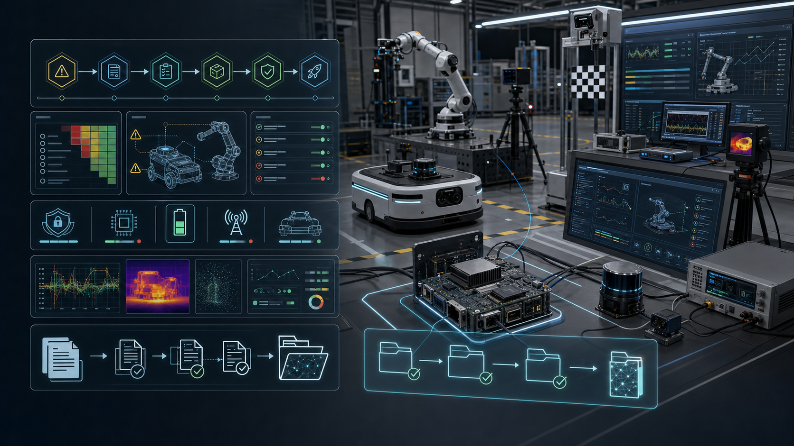

Scope First
先判断产品类型、目标市场、无线、电池、电源、用途和场景，再生成法规路径。
Pitch 40 · Compliance Evidence Factory
机器人合规证据工厂：把 Qualcomm 机器人 release 的模型、固件、BOM、无线、电池、安全策略、SBOM、测试和风险决策，锻造成可审计的认证准备证据包。
00 · Five-Thread Research
五条研究线指向同一个结论：机器人合规首先是适用范围判定，其次是安全案例、软件供应链、无线/电池/电气证据和市场准入资料。CertForge 不发证，而是让团队从研发第一天就生成实验室、客户和投资人可检查的证据。
先判断产品类型、目标市场、无线、电池、电源、用途和场景，再生成法规路径。
ISO 12100、ISO 13849、ISO 10218、ISO 3691-4 和 ANSI/A3 R15.08 的证据索引。
SBOM、VEX、NIST SSDF、漏洞披露、签名 OTA 和 EU CRA readiness。
CCC 目录判定、SRRC、GB / GB/T 交叉映射、中文标签说明书和实验室资料。
ScaleFoundry、SafetyOps、RiskLedger 和 EdgeRuntimeBench 的证据汇入同一 vault。

01 · Scope-To-Dossier Roadmap
CertForge 把合规工作拆成可执行的研发门禁：产品分类、标准图谱、证据缺口、责任人、实验室任务、变更影响和 launch dossier。它让合规从“最后补文档”变成持续工程系统。
选择机器人类型、用途、目标市场、无线、电池、电源、环境和用户群。
生成法规、标准、测试路径和不适用理由，交给人类 reviewer 签核。
从 release、BOM、SBOM、模型 profile、测试报告和供应商声明收集证据。
每次硬件、模型、固件、无线、电池、外壳或说明书变化触发 impact review。
输出 EU、US、China、采购安全和投资尽调用的 evidence index。
02 · Safety Case Studio
CertForge 不复制标准正文，也不替代安全工程师。它维护 hazard-to-evidence graph：每个危险源、风险降低措施、安全功能、测试记录、残余风险、运行策略和现场事件都能追溯到版本。
03 · Software And Cyber Evidence
CertForge 为每个 release 生成软件合规包：SBOM、VEX、漏洞状态、签名 OTA、构建完整性、AI model dossier、运行 profile、support period、CVD / PSIRT 记录和客户安全问卷答案。
04 · China Lane / Overseas Lane
中国版强调 CCC 目录判定、SRRC、GB / GB/T、安全生产、中文标签说明书和本地实验室协作。海外版强调 EU technical file、CE 自我符合性路径、FCC / NRTL readiness、软件供应链和采购安全包。
CCC applicability、SRRC / CMIIT、GB / GB/T crosswalk、电源/电池/无线资料、中文铭牌、中文说明书、供应商声明和实验室任务流。
EU Machinery / EMC / RED / Battery / CRA，US FCC equipment authorization、NRTL planning、UL robotics path、OSHA workplace evidence 和 customer procurement pack。
05 · Why Qualcomm
CertForge 把 Qualcomm 的安全启动、硬件身份、AI Hub profile、QNN runtime、边缘 benchmark、连接能力和产品生命周期，变成客户采购、实验室沟通、融资尽调和全球市场准入都能看到的证据资产。
设备身份、安全启动和 release manifest 成为证据链起点。
AI Hub / QNN 的模型 profile、latency、memory、temperature 和 artifact hash 进入模型护照。
EdgeRuntimeBench 记录 Qualcomm edge 的功耗、热、回滚和稳定性证据。
模组、ODM、集成商、实验室和云训练伙伴围绕同一证据格式协作。
中国和海外 launch dossier 让 Qualcomm 机器人更容易进入企业采购和量产。
CertForge 不承诺替你拿证，也不把合规变成魔法按钮。它让机器人团队在每一次设计、训练、发布、测试和现场事件中持续产生证据，最终让产品更容易被实验室、企业客户、投资人和 Qualcomm 生态伙伴相信。